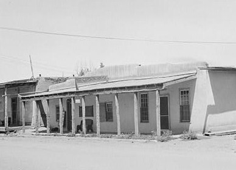
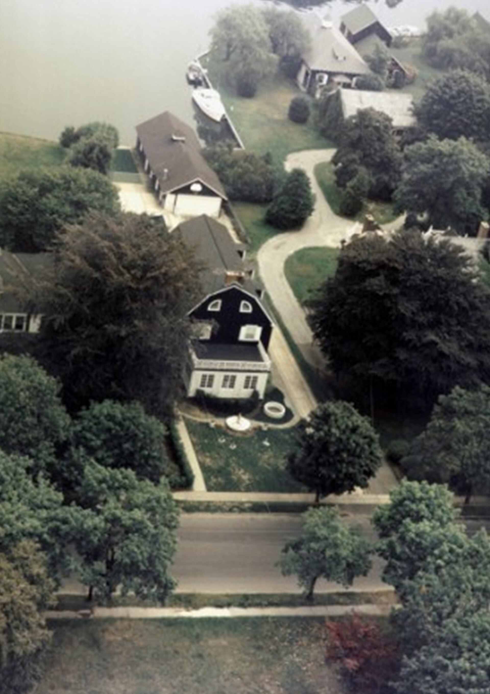
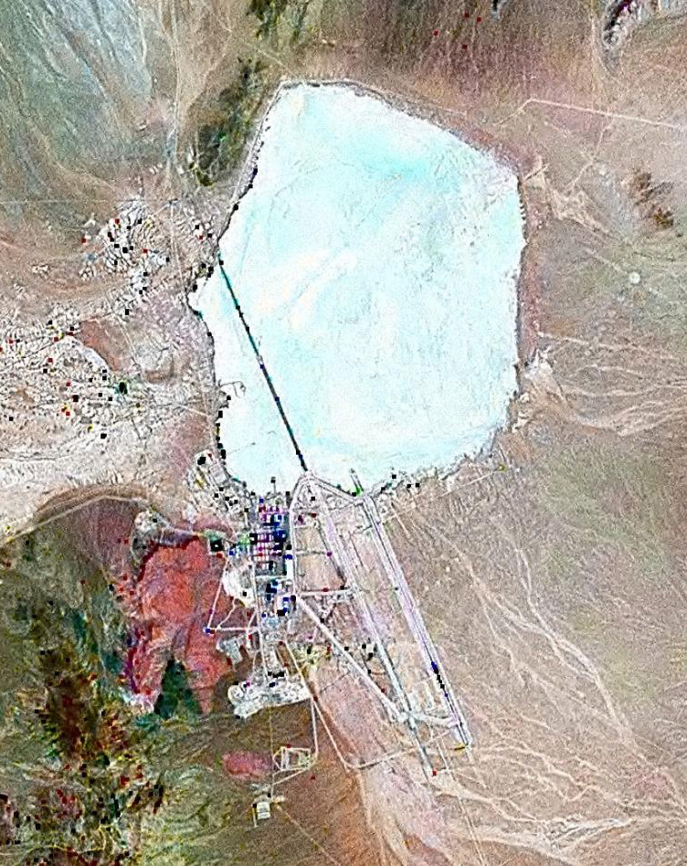
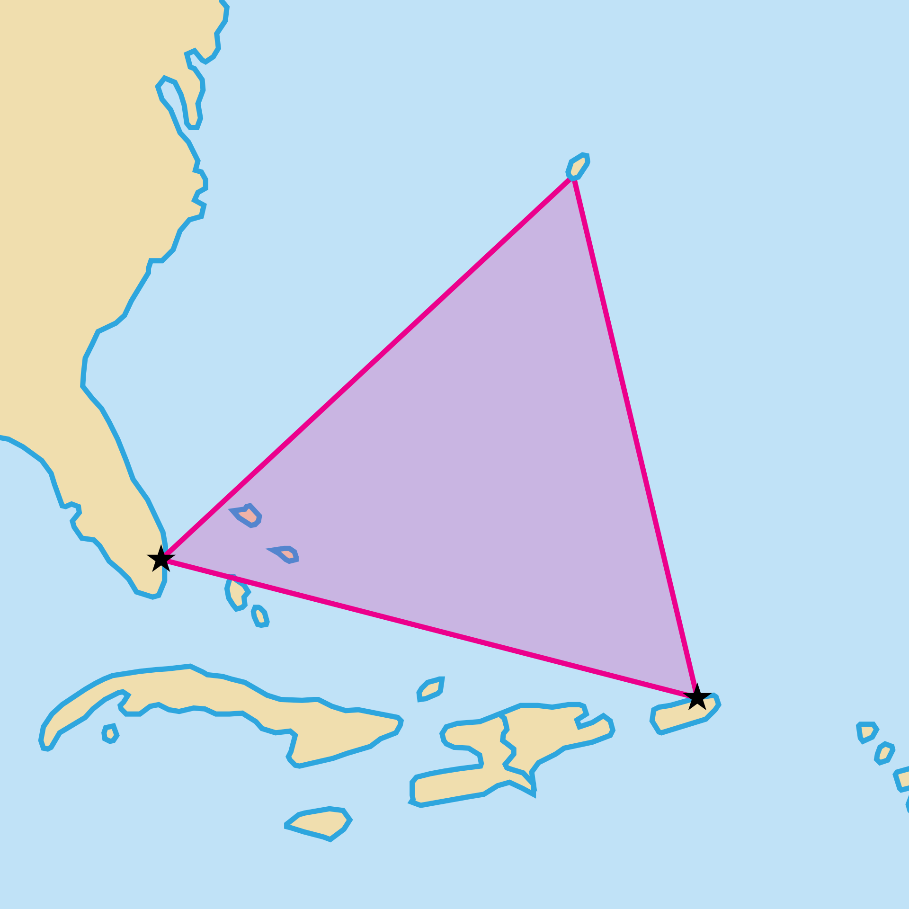
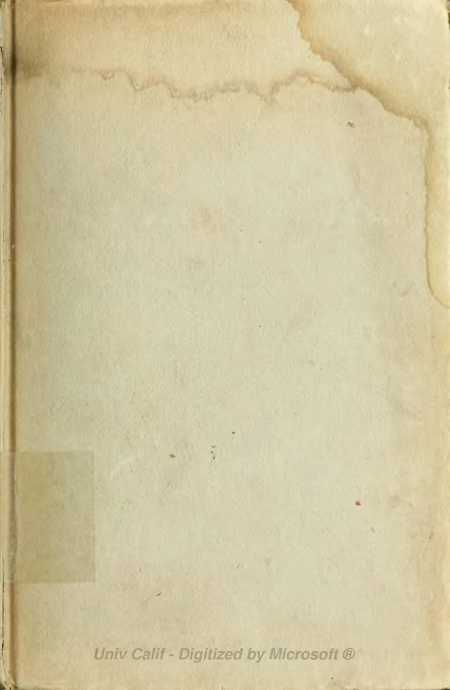

タオス・ハム
別名: 世界のハム音、The Hum
一部の人だけに聞こえる低い唸り音。世界各地で報告され、調査が行われてきたが、音源はいまだ特定されていない。

ディーゼルエンジンが遠くでアイドリングしているような、低く持続する唸り。聞こえる人には昼夜を問わず聞こえ、聞こえない人にはまったく聞こえない。
ニューメキシコ州タオス
1990年代初頭、ニューメキシコ州の町タオスで、住民の一部が原因不明の低周波音に悩まされていると訴えた。訴えは深刻で、不眠、頭痛、耳鳴り、集中困難を引き起こしていた。
1993年、住民の要請を受けた議員団が調査を求め、ロスアラモス国立研究所やサンディア国立研究所などの研究者による合同調査が行われた。
調査で分かったこと：住民のおよそ2%が音を聞いていた。ただし測定機器では、それに対応する音を検出できなかった。
聴取者に周波数を特定してもらう試験では、報告される周波数が32Hzから80Hzの範囲でばらついた。全員が同じ音を聞いているわけではない可能性が示された。
音源は特定されなかった。
聴取者に周波数を特定してもらう試験では、報告される周波数が32Hzから80Hzの範囲でばらついた。全員が同じ音を聞いているわけではない可能性が示された。
音源は特定されなかった。
世界各地で報告されている
同種の現象は各地で報告されている。
- ブリストル・ハム（英国、1970年代）— 数千人が訴え、新聞が調査した
- ウィンザー・ハム（カナダ、2011年〜）— 対岸の米国の製鉄所が疑われたが確定していない
- オークランド・ハム（ニュージーランド）
- 日本でも、原因不明の低周波音被害の相談が各地の自治体に寄せられている
説明の候補
- 実在する低周波音 — 工場、送電設備、地下水のポンプ、遠方の海洋波。特定できた事例も実際にある（ウィンザーでは製鉄所の設備が有力視された）
- 耳鳴りの一種 — ただし聴取者の多くは正常な聴力を持ち、通常の耳鳴りとは異なると訴える
- 耳音響放射 — 内耳が自ら微弱な音を出す現象。一部の人はこれを知覚できる
- 低周波への感受性の個人差 — 20Hz以下の音は通常聞こえないが、感じ取れる人がいる
なぜ怪異として扱われるのか
この現象が奇妙なのは、「聞こえる人と聞こえない人がいる」という点にある。聞こえる人にとっては明確に実在する苦痛だが、他人には確認できない。
そのため、訴えた人が「気のせい」「精神的なもの」として扱われることが繰り返されてきた。実際に低周波音が原因だった事例が後から確認された例もあり、一律に否定できない。
このサイトが扱う項目のなかで、ヘスダーレンの光と並んで「現在も未解明のまま調査対象になっている」数少ない例である。
出典・参考
- ハム（音）（日本語版ウィキペディア）報告と調査の概観
関連する項目

心霊・幽霊屋敷アミティヴィルの恐怖一家が28日で逃げ出したとされる家。ベストセラーと映画で世界に広まったが、事件を担当した弁護士が「話は作り物だった」と証言している。
UFO・UAPエリア51ネバダ州の砂漠にある米空軍の秘密施設。存在自体が長く否定されていたが、2013年に機密解除文書で公式に認められた。UFO伝説の中心地。
奇妙な場所バミューダ・トライアングル船と飛行機が消えるとされる大西洋の三角海域。だが保険会社も沿岸警備隊も、この海域を特別に危険とは扱っていない。 UMA・未確認生物ビッグフット北米の森林地帯で目撃される、二足歩行の大型類人猿とされる存在。1967年に撮影された動画が最大の根拠であり、同時に最大の争点でもある。
UMA・未確認生物ビッグフット北米の森林地帯で目撃される、二足歩行の大型類人猿とされる存在。1967年に撮影された動画が最大の根拠であり、同時に最大の争点でもある。
都市伝説血まみれメアリー暗い部屋で鏡に向かい名前を3回唱えると現れるとされる霊。心理学の実験で、この状況では実際に顔が歪んで見えることが確認されている。UFO・UAPプロジェクト・ブルーブック米空軍が17年間続けたUFO調査。12,618件を調べ、701件を「未確認」のまま残して終了した。記録は全て公開されている。